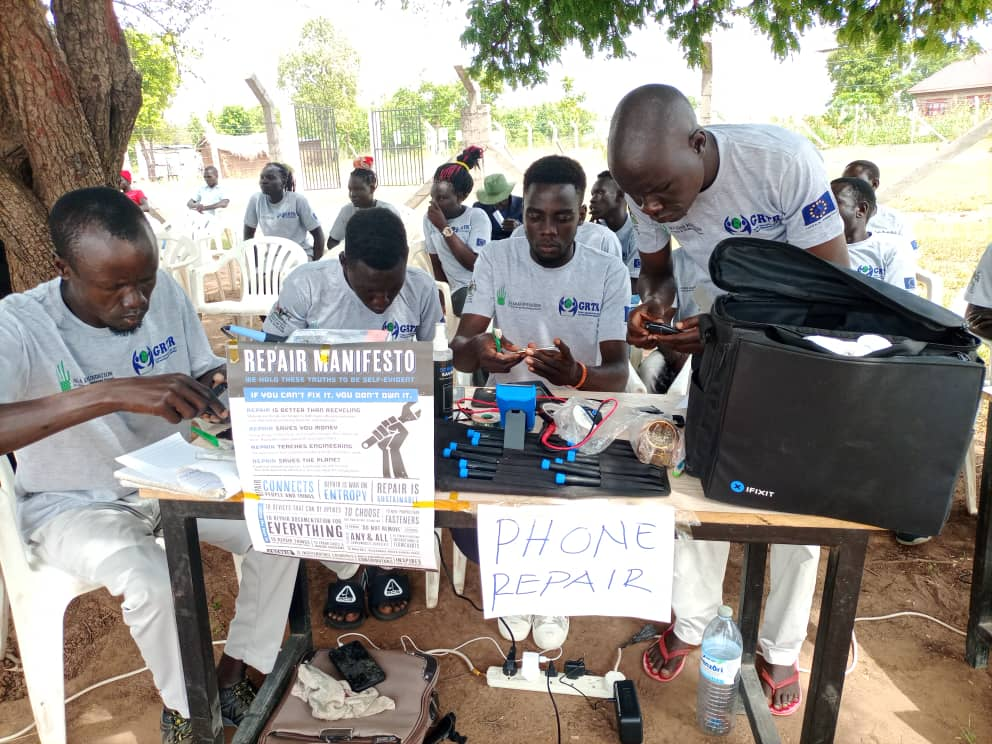
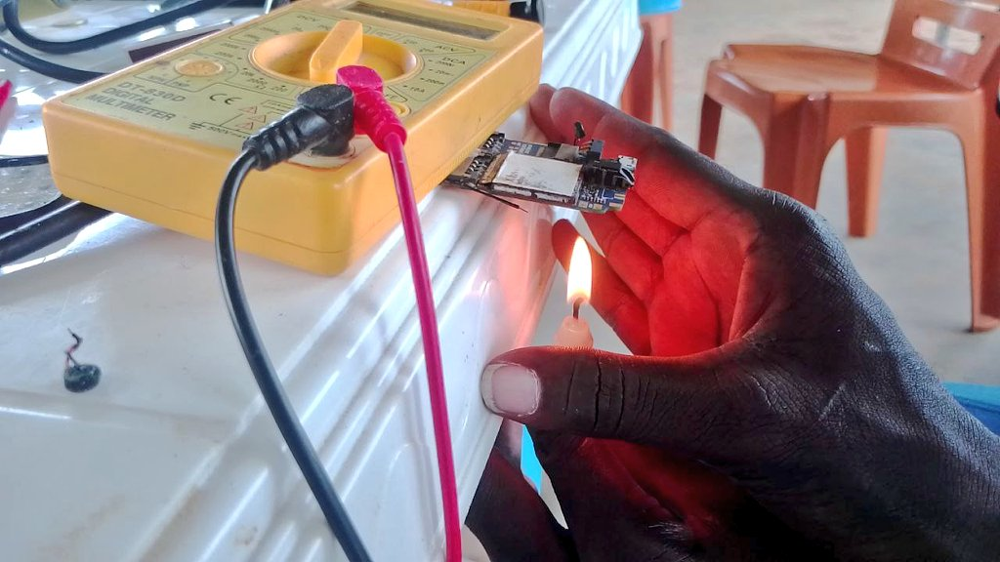

When Matthew Lubari fled his home in South Sudan to traverse hundreds of miles on foot to safety in Uganda, he carried a Ziploc bag that contained just three items: a screwdriver, a cutter, and a toothbrush.
The IT professional spent a decade living in Uganda’s Rhino Camp Refugee Settlement as a bloody civil war raged in his home country.
With his makeshift set of tools, he set out providing an essential service to many of the over 150,000 refugees: repairing their mobile phones, so that they could communicate with each other and with relatives back home.
Lubari said there was “huge demand” for his services.
“Partners like UNHCR distributed devices to them but without repair services,” Lubari said. This led to dangerous e-waste.
“When things would break, some people used to keep them inside their rooms. Some would throw them to the gardens, and it becomes a risk - children would play with the batteries, earphones and headsets; a kid can just get and fix it in their mouth. And some burned them, and some threw them into pit latrines.”
In 2019, Lubari co-founded a community repair organization that runs a low-cost repair shop and free mobile repair events in the settlement where people can come and get their broken devices fixed. The most common electronics the local technicians repair include phones, solar lamps, radios and motorbikes. When items can’t be repaired, the group upcycles them into new items like power banks, cooling fans and solar chargers.
“We are advocating for a circular economy,” Lubari said.

Community Creativity 4 Development has repaired about 2,000 items since its inception.
Lubari’s organization, Community Creativity 4 Development, is just one of thousands of community repair groups that contribute data to the Open Repair Alliance, a consortium of repair organizations from around the world that share data on electronics repairs.
Since 2017, the alliance has logged over 208,000 devices brought for repair at more than 20,000 community-led events in 31 countries in Europe, the Americas, Asia and Africa. At most events, people can get their devices repaired for free by their friends and neighbors skilled in IT and engineering. The cafes encourage attendees to sit with technicians and learn how to apply the fix themselves: promoting a culture of reuse, where people value and care for the things they already have rather than discarding them and buying new ones.
The movement has grown each year as more people seek cheaper solutions to extend the lives of their ever accumulating devices. But tech manufacturers are making electronics more difficult and expensive to repair, restricting repair information, tools and spare parts under the guise of protecting their intellectual property.
E-waste is a massive global problem, polluting ecosystems mainly in the Global South and squandering massive quantities of valuable resources.
According to the United Nations’ Global E-waste Monitor, the 62 million tonnes generated in 2022 would fill enough trucks to encircle the entire Earth bumper to bumper. And the problem doesn’t begin at the time of disposal: The carbon footprint of producing just one smartphone is up to the same amount used in a short-distance flight.
The repair consortium is fighting this throwaway culture through advocating for “right to repair” laws that would give independent repair shops and consumers the right to fix their products without manufacturers’ restrictions. The EU and the UK have passed some versions of these laws, and states in the U.S. including California and New York have introduced related bills.
Neil Mather, the tech lead at the London-based Restart Project - one of the Open Repair Alliance’s founding members, said the consortium uses its data to advocate for increased warranty periods of up to 10 years, better user manuals and repair kits for products, and reduced costs of spare parts.
The data shows that people are using their devices long past warranty periods, which generally cover only about one to two years. While the average age of a phone brought to a cafe for repair is almost five years, the typical repair age for watches, projectors and sewing machines is 26-28 years. Community technicians have successfully repaired mobile phones and computers that people have held for over 40 years. And some of the oldest items, like clocks, have hailed from the 1880s.
Of the laptop brands with 400 or more repairs logged, Lenovo and Asus laptops were generally brought for repair sooner than the typical laptop, and HP and Apple lasted slightly longer.
The average phone was repaired at four to five years old. But for the individuals who came to the cafes, Apple, Huawei, LG, Motorola, Microsoft, Xiaomi and Alcatel phones typically broke down at just two to three years, with Samsung slightly ahead at about four years.
Some older phones manufactured by Nokia, Siemens and Panasonic, however, were repaired at over a decade of age. Though this is partly because these brands have simply been around longer or no longer operate, this disparity also speaks to the durability of older phones compared to some newer, short-lived varieties. Phones made by the Chinese company Xiaomi, for instance, needed repair at an average of just two years post manufacture.
Overall, about half of all items taken to the Alliance’s community repair events were fixed, but a fourth were declared “end of life.” The rest were recommended for further work or spare parts.
Repairability has declined for products manufactured in the last two decades compared to those made in the 1980s and `90s that were brought to repair cafes. But the repair rate differs significantly between various categories of devices, with kitchen appliances, lighting and personal care items like hair dryers performing more and more poorly over the years.
Phones and computers, however, saw some improvement in the 2000s in the ability for non-manufacturers to fix them - perhaps partly because of their ubiquity - but their repairability has also dropped in the last three years.
“Anecdotally, people would suggest that things which used to be repairable are no longer repairable,” Mather said. “It used to be much easier to put new memory into a laptop or swap out any memory with an existing issue, but now quite often the memory is soldered onto the motherboard. And it's getting harder to access the battery in a mobile phone without causing some kind of damage.”
Mather said many items he and other technicians fix at the London cafes “aren’t designed to be repairable.” When he can’t find a manual online, he tries to reverse engineer the product by reading online forums or watching YouTube videos. Printers and laptops are some of the most tricky items to repair because of this lack of official information, he said.
“You can see in the practices of the way in which items are manufactured, is that they're not being designed to be repairable. The provision of spare parts isn't what it should be; the provision of information on how to repair things isn't what it should be,” he said.
The Restart Project, like Community Creativity 4 Development, plans to keep pushing policies and building a wider movement of people dedicated to breaking the ecologically destructive cycle of consumption and disposal. In East Africa, Lubari is currently incubating an electronics repair center in Yei, South Sudan, which he aims will also provide jobs for unemployed young people.

With limited tools and power supply, Lubari's organization innovates using candles.
He spends a lot of his time explaining to local technicians in downtown Kampala, Uganda’s capital, why they should care about repair beyond its business value. One reason: to fight extractive economies that take Africa’s resources and return cheap goods and trash.
“I begin by explaining the things that are used to make a single smartphone… Where do we get these materials? They’re being extracted from the Earth. After that, they need to be ferried overseas for processing and production, and later on they are brought back to Africa - sometimes things already used for long, or things that don't last long. Which means, in the end, the country is being flooded with a lot of electronic waste,” he said.
Lubari is forming a forum of repairers to advocate for the right to repair across the continent.